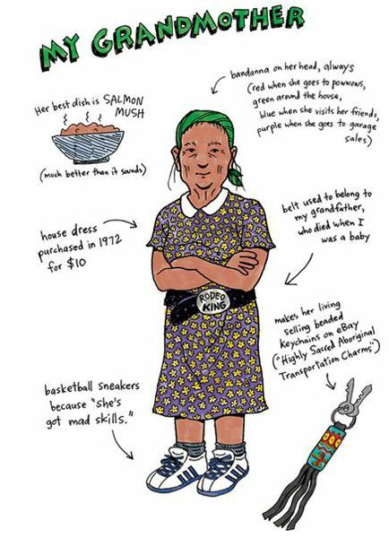
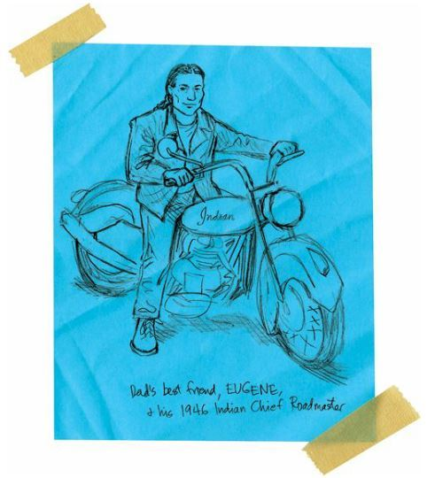

Grandmother Gives Me Some Advice
I went home that night completely confused. And terrified.
If I’d punched an Indian in the face, then he would have spent days plotting his revenge. And I imagined that white guys would also want revenge after getting punched in the face. So I figured Roger was going to run me over with a farm tractor or combine or grain truck or runaway pig.
I wished Rowdy was still my friend. I could have sent him after Roger. It would have been like King Kong battling Godzilla.
I realized how much of my self-worth, my sense of safety, was based on Rowdy’s fists.
But Rowdy hated me. And Roger hated me.
I was good at being hated by guys who could kick my ass. It’s not a talent you really want to have.
My mother and father weren’t home, so I turned to my grandmother for advice.
“Grandma,” I said. “I punched this big guy in the face. And he just walked away. And now I’m afraid he’s going to kill me.”
“Why did you punch him?” she asked.
“He was bullying me.”
“You should have just walked away.”
“He called me ‘chief.’ And ‘squaw boy.’ ”
“Then you should have kicked him in the balls.”
She pretended to kick a big guy in the crotch and we both laughed.
“Did he hit you?” she asked.
“No, not at all,” I said.
“Not even after you hit him?”
“Nope.”
“And he’s a big guy?”
“Gigantic. I bet he could take Rowdy down.”
“Wow,” she said.
“It’s strange, isn’t it?” I asked. “What does it mean?”
Grandma thought hard for a while.
“I think it means he respects you,” she said.
“Respect? No way!”
“Yes way! You see, you men and boys are like packs of wild dogs. This giant boy is the alpha male of the school, and you’re the new dog, so he pushed you around a bit to see how tough you are.”
“But I’m not tough at all,” I said.

“Yeah, but you punched the alpha dog in the face,” she said. “They’re going to respect you now.”
“I love you, Grandma,” I said. “But you’re crazy.”
I couldn’t sleep that night because I kept thinking about my impending doom. I knew Roger would be waiting for me in the morning at school. I knew he’d punch me in the head and shoulder area about two hundred times. I knew I’d soon be in a hospital drinking soup through a straw.
So, exhausted and terrified, I went to school.
My day began as it usually did. I got out of bed at dark-thirty, and rummaged around the kitchen for anything to eat. All I could find was a package of orange fruit drink mix, so I made a gallon of that, and drank it all down.
Then I went into the bedroom and asked Mom and Dad if they were driving me to school.
“Don’t have enough gas,” Dad said and went back to sleep.
Great, I’d have to walk.
So I put on my shoes and coat, and started down the highway. I got lucky because my dad’s best friend Eugene just happened to be heading to Spokane.
Eugene was a good guy, and like an uncle to me, but he was drunk all the time. Not stinky drunk, just drunk enough to be drunk. He was a funny and kind drunk, always wanting to laugh and hug you and sing songs and dance.
Funny how the saddest guys can be happy drunks.
“Hey, Junior,” he said. “Hop on my pony, man.”
So I hopped onto the back of Eugene’s bike, and off we went, barely in control. I just closed my eyes and held on.
And pretty soon, Eugene got me to school.
We pulled up in front and a lot of my classmates just stared. I mean, Eugene had braids down to his butt, for one, and neither of us wore helmets, for the other.

I suppose we looked dangerous.
“Man,” he said. “There’s a lot of white people here.”
“Yeah.”
“You doing all right with them?”
“I don’t know. I guess.”
“It’s pretty cool, you doing this,” he said.
“You think?”
“Yeah, man, I could never do it. I’m a wuss.”
Wow, I felt proud.
“Thanks for the ride,” I said.
“You bet,” Eugene said.
He laughed and buzzed away. I walked up to the school and tried to ignore the stares of my classmates.
And then I saw Roger walk out the front door.
Man, I was going to have to fight. Shit, my whole life is a fight.
“Hey,” Roger said.
“Hey,” I said.
“Who was that on the bike?” he asked.
“Oh, that was my dad’s best friend.”
“That was a cool bike,” he said. “Vintage.”
“Yeah, he just got it.”
“You ride with him a lot?”
“Yes,” I said. I lied.
“Cool,” Roger said.
“Yeah, cool,” I said.
“All right, then,” he said. “I’ll see you around.”
And then he walked away.
Wow, he didn’t kick my ass. He was actually nice. He paid me some respect. He paid respect to Eugene and his bike.
Maybe Grandma was right. Maybe I had challenged the alpha dog and was now being rewarded for it.
I love my grandmother. She’s the smartest person on the planet.
Feeling almost like a human being, I walked into the school and saw Penelope the Beautiful.
“Hey, Penelope,” I said, hoping that she knew I was now accepted by the dog pack.
She didn’t even respond to me. Maybe she hadn’t heard me.
“Hey, Penelope,” I said again.
She looked at me and sniffed.
SHE SNIFFED!
LIKE I SMELLED BAD OR SOMETHING!
“Do I know you?” she said.
There were only about one hundred students in the whole school, right? So of course, she knew me. She was just being a bitch.
“I’m Junior,” I said. “I mean, I’m Arnold.”
“Oh, that’s right,” she said. “You’re the boy who can’t figure out his own name.”
Her friends giggled.
I was so ashamed. I might have impressed the king, but the queen still hated me. I guess my grandmother didn’t know everything.